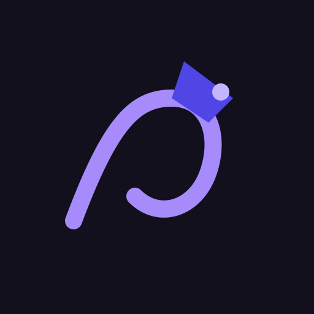
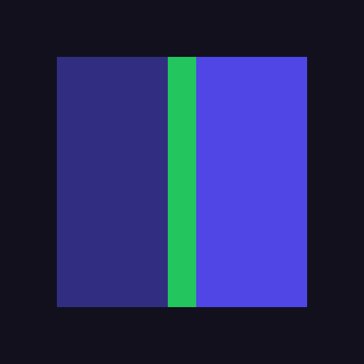
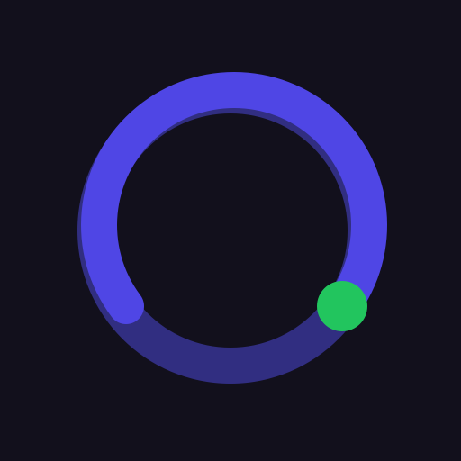
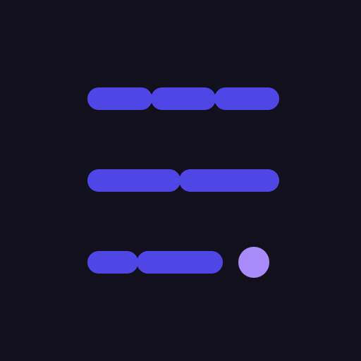
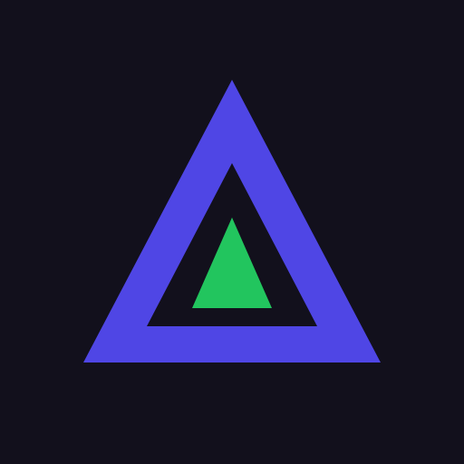
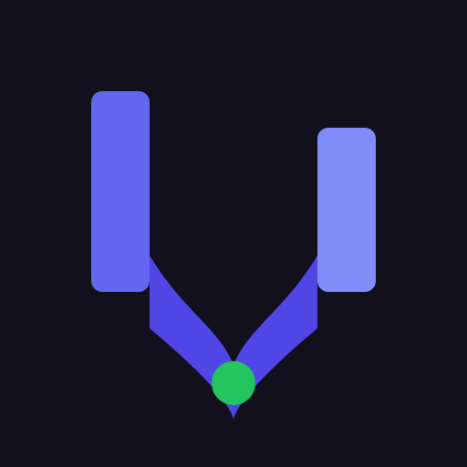
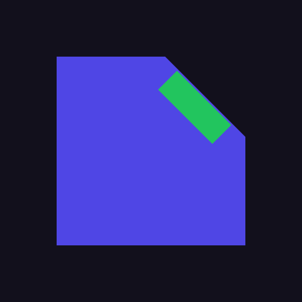

No plain R monogram / generic shield-check. Pick a letter (A–H).

A-threadNeedle + thread — tailor without the word R
B-slitBefore | green cut | after — pure diff
C-fit-arcFit score arc ending in green
D-stitchStitched lines — craft / alter
E-deltaDelta rewrite wedge
F-mergeTwo roles merge into one tailored path
H-cutPage with edit cut corner